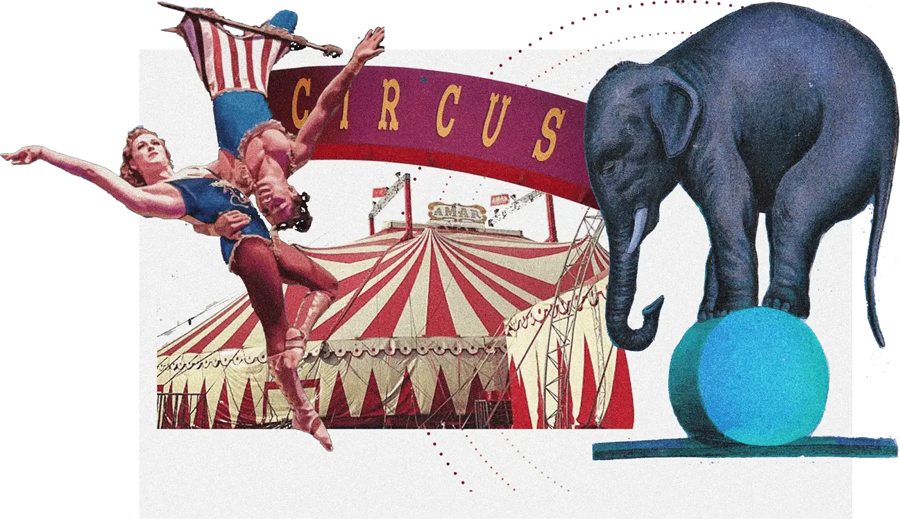

SECOND YEAR ARCHITECTURE PROJECT
A COMMUNITY FOR HOUSING PERFORMERS OF CHOICE


A COMMUNITY FOR HOUSING PERFORMERS OF CHOICE
Spectacle Tower is project of a community housing for visiting groups of circus performers. The project is located in An coats, Manchester, right next to an art center and a historic Hope Mill Theatre being strongly influenced by performing arts of different kinds over the years. The accommodation space has been extended by a Big Top Studio - practice and performance spaces on the site where members of the public have opportunity to engage with aspects of the performance.